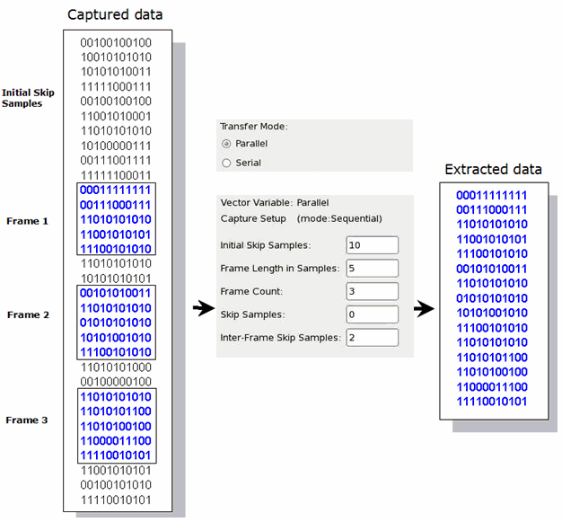
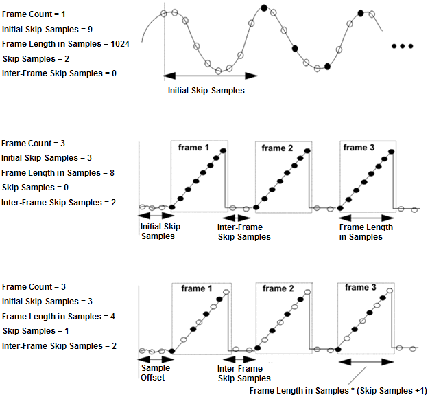

Vector variable examples
The following examples, one for serial and two for parallel transfer mode, illustrate how a vector variable defines a sub-set of captured samples.
Serial Transfer Mode:
In this example (the figure below), the bit data of a single pin have been captured. In serial transfer mode you extract samples from one pin only.
The example shows how the vector variable defines which of these samples will be read and which bits will be skipped (discarded).

For serial transfer mode the unit is bits. N bits make up a sample.
A note on Bits per word: This is the number of formatted bits (after skipping) that are uploaded in each single 32-bit word.
You can optimize the upload by adjusting the number of bits per word. For the example above this would mean:
Bits per word = 15: 3 samples (15 bits) are transferred in each 32-bit word. The uploaded result array contains 1 decimal number.Bits per word = 5: 1 sample (5 bit) is transferred in each 32-bit word. The uploaded result array contains 3 decimal numbers.Bits per word = 1: 1 sample (1 bit) is transferred in each 32-bit word. The uploaded result array contains 15 decimal numbers.
Keep in mind that you must take apart the data again after upload!
Parallel Transfer Mode - Example 1:
In parallel transfer mode you extract samples from multiple pins in parallel. In this example (the figure below), a series of 11-bit samples have been captured. The example shows how the vector variable defines which of these samples will be read and which will be skipped (discarded).

Parallel Transfer Mode - Example 2:
This example (the figure below) is related to capturing of output codes of an ADC - a typical application for Digital Capture.
Each point in the diagrams represents one sample, for example, the 12-bit output code of an ADC. White points are samples that are skipped due to the vector variable settings, while black points represent those samples which are selected by the vector variable, and which will be used to perform further analysis, for example, for the calculation of ADC linearity.
